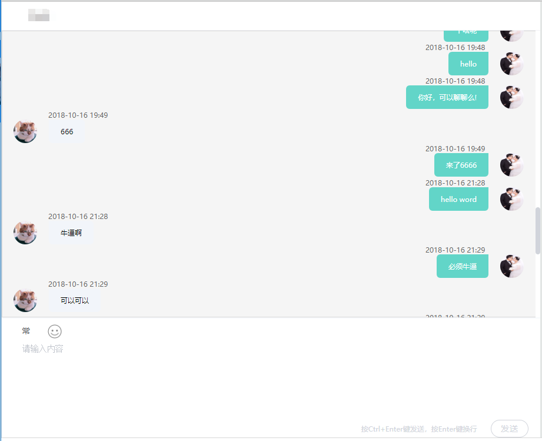
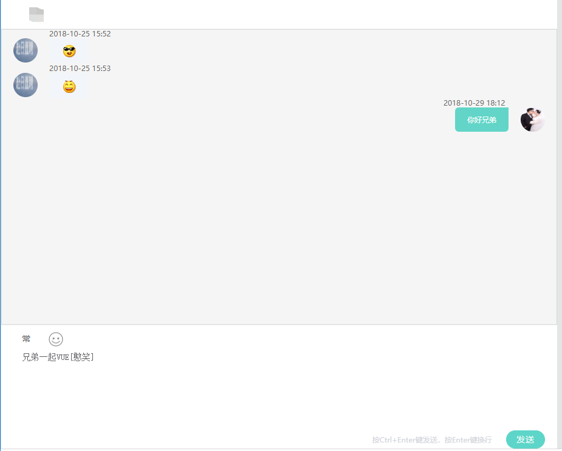
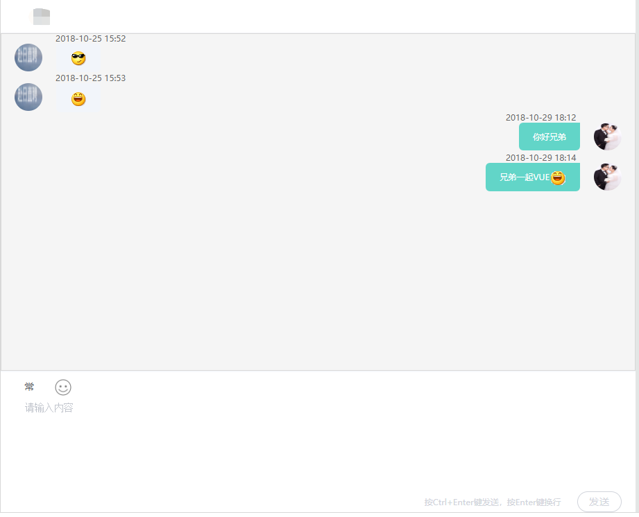

Spring4.0以后引入了对websocket的支持 。相信你已经搭建了SpringMVC的开发框架。
首先jar依赖
<dependency>
<groupId>org.springframework</groupId>
<artifactId>spring-websocket</artifactId>
<version>4.0.1.RELEASE</version>
</dependency>
<dependency>
<groupId>org.springframework</groupId>
<artifactId>spring-messaging</artifactId>
<version>4.0.1.RELEASE</version>
</dependency>
spring-mvc.xml需要配置，前后台分离开发事需要范文后台接口的路由：
<?xml version="1.0" encoding="UTF-8"?>
<beans xmlns="http://www.springframework.org/schema/beans"
xmlns:xsi="http://www.w3.org/2001/XMLSchema-instance"
xmlns:context="http://www.springframework.org/schema/context"
xmlns:websocket="http://www.springframework.org/schema/websocket"
xsi:schemaLocation="http://www.springframework.org/schema/beans
http://www.springframework.org/schema/beans/spring-beans-4.3.xsd
http://www.springframework.org/schema/context
http://www.springframework.org/schema/context/spring-context-4.3.xsd
http://www.springframework.org/schema/websocket
http://www.springframework.org/schema/websocket/spring-websocket-4.3.xsd ">
<!-- <bean id="websocket" class="com.chat.system.websocket.handler.WebsocketEndPoint" />
<websocket:handlers>
<websocket:mapping path="/websocket" handler="websocket" />
<websocket:handshake-interceptors>
<bean class="com.chat.system.websocket.HandshakeInterceptor" />
</websocket:handshake-interceptors>
</websocket:handlers> -->
<bean id="websocket" class="co.jp.chatsys.modules.sys.websocket.demo.WebSocketHander" />
<websocket:handlers allowed-origins="*" >
<websocket:mapping path="/echo" handler="websocket" />
<websocket:handshake-interceptors>
<bean class="co.jp.chatsys.modules.sys.websocket.demo.HandshakeInterceptor" />
</websocket:handshake-interceptors>
</beans>
HandshakeInterceptor.java
import java.util.Map;
import javax.servlet.http.HttpServletRequest;
import org.springframework.http.server.ServerHttpRequest;
import org.springframework.http.server.ServerHttpResponse;
import org.springframework.http.server.ServletServerHttpRequest;
import org.springframework.web.socket.WebSocketHandler;
import org.springframework.web.socket.server.support.HttpSessionHandshakeInterceptor;
public class HandshakeInterceptor extends HttpSessionHandshakeInterceptor {
// 握手前
@Override
public boolean beforeHandshake(ServerHttpRequest request,
ServerHttpResponse response, WebSocketHandler wsHandler,
Map<String, Object> attributes) throws Exception {
System.out.println("++++++++++++++++ HandshakeInterceptor: beforeHandshake ++++++++++++++"+attributes);
if (request instanceof ServletServerHttpRequest) {
HttpServletRequest servletRequest = ((ServletServerHttpRequest) request).getServletRequest();
String userId = ((ServletServerHttpRequest) request).getServletRequest().getParameter("userId");
String toUserId = ((ServletServerHttpRequest) request).getServletRequest().getParameter("toUserId");
attributes.put("WEBSOCKET_USERNAME", userId);
attributes.put("TO_WEBSOCKET_USERNAME", toUserId);
servletRequest.getSession().setAttribute("WEBSOCKET_USERNAME", userId);
servletRequest.getSession().setAttribute("TO_WEBSOCKET_USERNAME", toUserId);
}
return super.beforeHandshake(request, response, wsHandler, attributes);
}
// 握手后
@Override
public void afterHandshake(ServerHttpRequest request,
ServerHttpResponse response, WebSocketHandler wsHandler,
Exception ex) {
System.out.println("++++++++++++++++ HandshakeInterceptor: afterHandshake ++++++++++++++");
super.afterHandshake(request, response, wsHandler, ex);
}
}
WebSocketConfig.java
import org.springframework.web.socket.config.annotation.WebSocketConfigurer;
import org.springframework.web.socket.config.annotation.WebSocketHandlerRegistry;
//@Configuration
//@EnableWebSocket // 开启websocket
public class WebSocketConfig implements WebSocketConfigurer {
@Override
public void registerWebSocketHandlers(WebSocketHandlerRegistry registry) {
registry.addHandler(new WebSocketHander(), "/echo").addInterceptors(new HandshakeInterceptor()); // 支持websocket的访问链接
registry.addHandler(new WebSocketHander(), "/sockjs/echo").addInterceptors(new HandshakeInterceptor()).withSockJS(); // 不支持websocket的访问链接
}
}
WebSocketHander.java
import java.io.IOException;
import java.text.SimpleDateFormat;
import java.util.ArrayList;
import java.util.Date;
import java.util.HashMap;
import java.util.List;
import java.util.Map;
import net.sf.json.JSONObject;
import org.apache.log4j.Logger;
import org.springframework.web.socket.CloseStatus;
import org.springframework.web.socket.TextMessage;
import org.springframework.web.socket.WebSocketHandler;
import org.springframework.web.socket.WebSocketMessage;
import org.springframework.web.socket.WebSocketSession;
import co.jp.chatsys.modules.boss.entity.ChatInfo;
import co.jp.chatsys.modules.boss.entity.MasterDictData;
import co.jp.chatsys.modules.boss.entity.SettingGreetings;
import co.jp.chatsys.modules.sys.utils.ChatServerUtil;
public class WebSocketHander implements WebSocketHandler {
private static final Logger logger = Logger.getLogger(WebSocketHander.class);
private static final Map<String,WebSocketSession> sessions = new HashMap<String, WebSocketSession>();
private static final ArrayList<WebSocketSession> users = new ArrayList<WebSocketSession>();
// 初次链接成功执行
@Override
public void afterConnectionEstablished(WebSocketSession session) throws Exception {
logger.debug("链接成功......");
users.add(session);
String userId = (String) session.getAttributes().get("WEBSOCKET_USERNAME");
String toUserId = (String) session.getAttributes().get("TO_WEBSOCKET_USERNAME");
if (userId != null && toUserId != null) {
// 根据自己的业务需求写初次握手后的逻辑
// 例如取出聊天记录
sendMessageToUser(userId, toUserId, masterDictData.getLabel(), userType, roomNum, ymdhms);
}
}
// 接受前台传送消息处理消息
@Override
public void handleMessage(WebSocketSession webSocketSession, WebSocketMessage<?> webSocketMessage)
throws Exception {
Date day=new Date();
SimpleDateFormat df = new SimpleDateFormat("yyyyMMddHHmmss");
String ymdhms = df.format(day);
String userId = (String) webSocketSession.getAttributes().get("WEBSOCKET_USERNAME");
String toUserId = (String) webSocketSession.getAttributes().get("TO_WEBSOCKET_USERNAME");
sendMessageToUser(userId, toUserId, webSocketMessage.getPayload(), type, roomNum, ymdhms);
// 根据业务需求，
// 例如发送完成后可以调用Isert数据库
}
@Override
public void handleTransportError(WebSocketSession webSocketSession, Throwable throwable) throws Exception {
if (webSocketSession.isOpen()) {
webSocketSession.close();
}
logger.debug("链接出错，关闭链接......");
users.remove(webSocketSession);
}
@Override
public void afterConnectionClosed(WebSocketSession webSocketSession, CloseStatus closeStatus) throws Exception {
logger.debug("链接关闭......" + closeStatus.toString());
users.remove(webSocketSession);
}
@Override
public boolean supportsPartialMessages() {
return false;
}
/**
* 给所有在线用户发送消息
*
* @param message
*/
public void sendMessageToUsers(TextMessage message) {
for (WebSocketSession user : users) {
try {
if (user.isOpen()) {
user.sendMessage(message);
}
} catch (IOException e) {
e.printStackTrace();
}
}
}
/**
* 给某个用户发送消息
*
* @param userName
* @param message
*/
public void sendMessageToUser(String userId, String toUserId, Object message, String type, String roomNum,String ymdhms) {
for (WebSocketSession user : users) {
if (user.getAttributes().get("WEBSOCKET_USERNAME").equals(userId) && user.getAttributes().get("TO_WEBSOCKET_USERNAME").equals(toUserId) && user.getAttributes().get("ROOM_NUM").equals(roomNum)) {
try {
if (user.isOpen()) {
Map<String,Object> dataMap = new HashMap<String, Object>();
dataMap.put("mesKbn", type);
dataMap.put("message", (String) message);
dataMap.put("date", ymdhms.substring(0, 4) + "-" + ymdhms.substring(4, 6) + "-" + ymdhms.substring(6, 8) + " "+ ymdhms.substring(8, 10)+":"+ymdhms.substring(10, 12));
String dataStr = JSONObject.fromObject(dataMap).toString();
TextMessage returnMessage = new TextMessage(dataStr);
user.sendMessage(returnMessage);
}
} catch (IOException e) {
e.printStackTrace();
}
} else if (user.getAttributes().get("TO_WEBSOCKET_USERNAME").equals(userId) && user.getAttributes().get("WEBSOCKET_USERNAME").equals(toUserId) && user.getAttributes().get("ROOM_NUM").equals(roomNum)) {
try {
if (user.isOpen()) {
Map<String,Object> dataMap = new HashMap<String, Object>();
dataMap.put("mesKbn", type);
dataMap.put("message", (String) message);
dataMap.put("date", ymdhms.substring(0, 4) + "-" + ymdhms.substring(4, 6) + "-" + ymdhms.substring(6, 8) + " "+ ymdhms.substring(8, 10)+":"+ymdhms.substring(10, 12));
String dataStr = JSONObject.fromObject(dataMap).toString();
TextMessage returnMessage = new TextMessage(dataStr);
user.sendMessage(returnMessage);
}
} catch (IOException e) {
e.printStackTrace();
}
}
}
}
}
后台代码也就以上这些
到前台VUE更简单
前台也需要一个socket来得到后台的通知，HTML5就自带了一个
<template>
<div class="background">
<div id="main" class="inner">
<div class="chat-wrap">
<!--聊天对话显示-->
<div class="chat-box show-box">
<div class="chat-list" id="chatWindow" style="visibility: visible;">
<ul>
<li v-for="item in datamsg">
<div :class="['status-read',item.mesKbn=='1'?'item-myself':'item-friend']">
<div class="figure">
<img v-show="item.mesKbn=='0'"
:src="toUser.toUserPhoto"
alt="">
</div>
<div class="myFigure">
<img v-show="item.mesKbn=='1'"
:src="user.userPhoto"
alt="">
</div>
<div class="text">
<div v-if="item.mesKbn=='0'" class="status1" :style="{ backgroundPosition: -80+'px '+0} ">{{item.date}}</div>
<div v-else="item.mesKbn=='1'" class="status" :style="{ backgroundPosition: -80+'px '+0} ">{{item.date}}</div>
<div v-emotion="item.message"></div>
</div>
</div>
</li>
</ul>
</div>
<!--用户输入部分-->
<div class="chat-editor">
<el-input type="textarea" :rows="6" placeholder="请输入内容" v-model="message"
@keyup.ctrl.enter.native="sendMsg(message)">
</el-input>
<div class="chat-op"><span class="tip">按Ctrl+Enter键发送，按Enter键换行</span>
<button :class="['btn', 'btn-send',message==''?'btn-disabled':'' ]" :disabled="message==''"
@click="sendMsg(message)">发送
</button>
</div>
</div>
</div>
</div>
</div>
</div>
</template>
<script>
import {CHAT_HOST} from '../../../build/config_host';
export default {
data() {
return {
websock: null,
datamsg: [],
userId:'',
toUserId:'',
hostUrl:''
}
},
methods: {
initWebSocket(){ //初始化weosocket
//ws地址
const wsuri = this.hostUrl+'/echo?userId='+ this.userId + '&toUserId=' + this.toUserId
this.websock = new WebSocket(wsuri);
this.websock.onmessage = this.websocketonmessage;
this.websock.onclose = this.websocketclose;
},
websocketonmessage(e){ //数据接收
this.datamsg.push(JSON.parse(e.data));
},
sendMsg(agentData){//数据发送
if (/^\s*$/.test(this.message)) {
alert("请不要发送空消息")
} else if (this.message.length > 200) {
alert("请不要超过200个字")
} else {
this.websock.send(agentData);
this.message = "";
}
},
websocketclose(e){ //关闭
console.log("connection closed (" + e.code + ")");
},
},
created() {
this.hostUrl = CHAT_HOST
this.userId = window.localStorage.getItem("userId");
this.toUserId = window.localStorage.getItem("toUserId");
},
}
</script>
<style>
</style>
config_host.js
export const CHAT_HOST = "ws://localhost:8080/bossjobchat"
画面：


